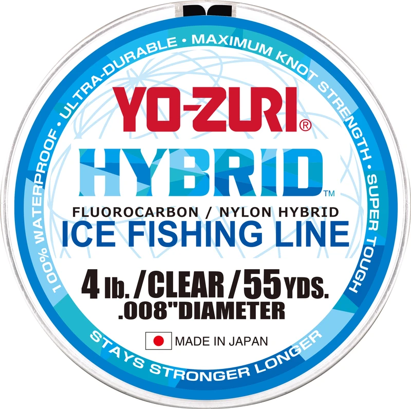

Yo-Zuri Hybrid Ice Line
Diameter chart, reel capacity & backing guide

Hybrid Ice Line is Yo-Zuri's dedicated ice-fishing copolymer in 55-yard spools, with 1-6 lb choices. It is neither ordinary Hybrid Clear nor the separately listed TopKnot Ice fluorocarbon product.
- Construction
- Nylon/fluorocarbon copolymer formulated and packaged as Hybrid Ice Line
- Listed strengths
- 1-6 lb
- Line type
- Copolymer main line
Is Hybrid Ice Line right for your setup?
Hybrid Ice is a light-line option for an ice reel where depth, presentation and reserve determine the required working supply. Its 55-yard package should not be treated as a full-spool guarantee. Plan for the deepest deployment, fish movement and trimming; a short supply is less forgiving when the water is deep.
How much Hybrid Ice Line will fit?
Calculated estimates, not measured fills. Stop at the reel manufacturer's fill level even if some line remains.
Yo-Zuri Hybrid Ice Line diameter chart
Only the source-reviewed strengths and package combinations listed below are included. Converted measurements are identified in the source notes.
| Strength | Inches | mm | Spools (yd) |
|---|---|---|---|
| 0.005 | 0.127 | 55 | |
| 0.006 | 0.152 | 55 | |
| 0.007 | 0.170 | 55 | |
| 0.008 | 0.203 | 55 | |
| 0.009 | 0.220 | 55 | |
| 0.010 | 0.254 | 55 |
Choosing your Hybrid Ice Line strength
The 1 and 2 lb sizes are published at 0.127 and 0.152 mm. Such light labels call for appropriately light tackle, gentle handling and a checked knot rather than reliance on a capacity result.
The 3-6 lb group runs through 0.170, 0.203, 0.220 and 0.254 mm. The ordinary Hybrid 4 lb chart is thicker, so do not use it for this Ice package.
Choose strength for the lure, hook and likely fish; then check depth plus reserve against 55 yards. The smallest diameter is not automatically the best choice.
Specification-based guidance, not a ReelCalc hands-on performance test. Capacity results are estimates, not measured fills.
Want a guided recommendation?
Continue in the Setup WizardSame pound test, different diameters
At your selected strength
Loading diameter comparisons...
What changes with another line?
Nearby diameters in the line database
| Line | Strength | Inches | Difference |
|---|---|---|---|
| Loading line database... | |||
Backing, working line & leaders
Budget for the whole deployment
Enter enough working line for water depth and a realistic reserve. Backing can fill a deep spool, but it does not extend the 55 yards of Hybrid Ice available to fish.
Use a suitable small reel
A small ice or light spinning reel may be a practical match. If the reel holds much more than 55 yards, plan the backing connection so it remains below normal deployment.
Check the cold-weather working section
Inspect line near the lure and any contact points, including the ice edge. Replace visibly damaged line and retie as needed; the manufacturer's waterproof positioning does not remove mechanical wear.
How Much Fits on These Reels?
Estimated full-spool capacity for the Hybrid Ice Line strength selected above, with no backing. These are calculated examples, not physical tests or recommendations for every pairing.
Loading capacity estimates...
Hybrid Ice Line questions, answered
How long is one spool?
The official Hybrid Ice table lists 55 yards for every 1-6 lb size.
Can I use standard Hybrid diameters?
No. Hybrid Ice is a dedicated product with its own table. For example, 4 lb Ice is 0.203 mm, while 4 lb Hybrid Clear is 0.235 mm.
Does it need a separate ice calculator?
Capacity still depends on physical diameter. The important practical difference is planning depth and reserve within a short 55-yard package, not assuming an open-water casting-length plan.
How much Hybrid Ice Line will fit my reel?
Use the exact strength and the reel's published capacity. Pound test is not a fixed diameter, so equal-strength products can produce different fill estimates.
Is one 55-yard package enough?
Only when it covers the planned working length and an appropriate reserve. Backing can fill unused volume, but cannot supply more working line for long casts, deep drops or fish runs.
Specifications & sources
Official sources retrieved September 13, 2026. Both inch and millimeter values are published independently and retained within rounding tolerance. All six 55-yard rows read from the dedicated Hybrid Ice table. Ordinary Hybrid and TopKnot Ice excluded. Package options are not a stock or price guarantee.
Calculations use the catalog's listed inch diameters. Published inch and millimeter values may differ slightly because of rounding.
- Official Yo-Zuri specification source Exact numeric rows, package identity and model positioning.